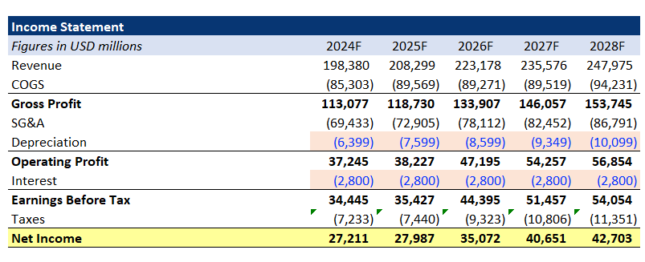
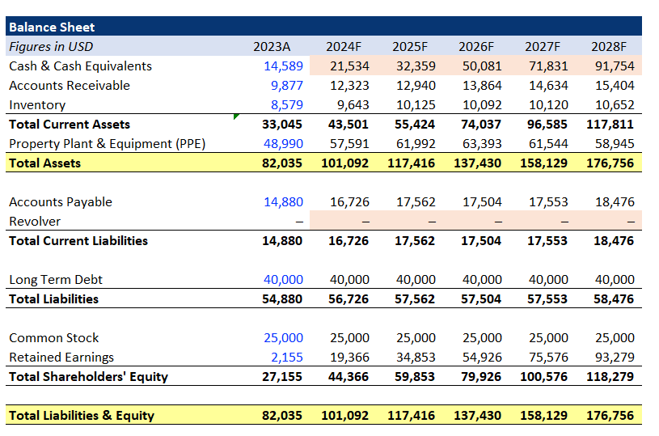
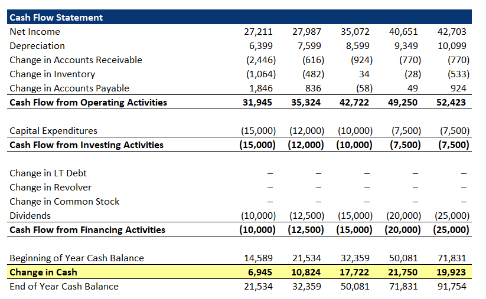
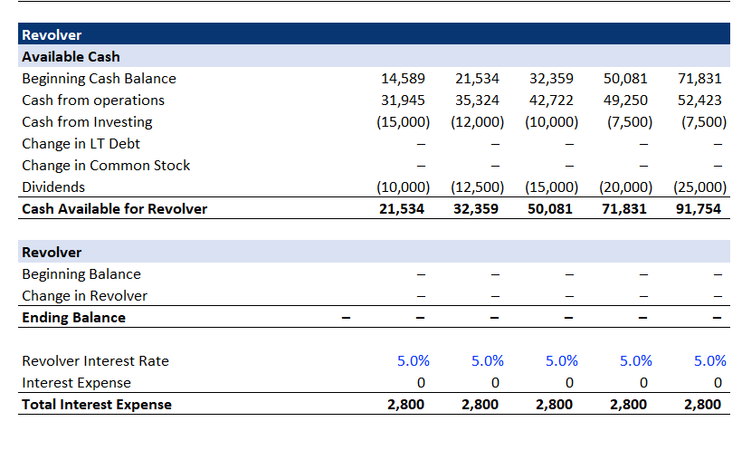

Three-Statement Financial Model
Excel · Driver-Based Forecasting · Income Statement · Balance Sheet · Cash Flow · Revolver
3 Statements
IS · BS · CFS fully integrated (5-year forecast)
Schedules
PP&E roll-forward · Depreciation · Retained earnings
Revolver
Auto cash shortfall coverage + interest, circularity handled
Model Snapshots

Driver-based Income Statement (Revenue = Price × Quantity; COGS & SG&A as % of revenue)

Balance Sheet with AR/Inventory/AP assumptions and PP&E roll-forward

Indirect Cash Flow: NI → CFO (add-backs & working capital), CFI (CapEx), CFF

Revolver schedule using -MIN(AvailableCash, BeginningRevolver) + interest; iterative calc enabled
Key Features
- Clean, consistent workbook: structured tabs for Assumptions, IS, BS, CFS, and Schedules; gridlines off for readability.
- Driver-based Income Statement:
- Revenue =
Units × Price/Unit
- COGS & SG&A modeled as % of revenue
- Taxes apply only when EBT > 0:
=IF(EBT>0, EBT*TaxRate, 0)
- PP&E & Depreciation schedule: existing assets and forecast CapEx with straight-line depreciation (e.g., 10-year life). PP&E roll-forward:
Ending PP&E = Beginning PP&E + CapEx − Depreciation
- Balance Sheet assumptions: AR as % of revenue, Inventory as % of COGS, AP as % of COGS. Retained earnings schedule ties NI and dividends.
- Indirect Cash Flow Statement: NI + non-cash add-backs (Depreciation) ± working-capital deltas → CFO; CapEx → CFI; debt/stock/dividends → CFF; ending cash flows back to BS.
- Revolver (auto cash buffer): when projected cash is negative, draw on revolver; when positive, pay down. Simple, robust formula:
ChangeInRevolver = -MIN(AvailableCash, BeginningRevolver)
Interest on outstanding revolver rolls into IS.
- Circularity resolved: enabled Excel iterative calculation (large max iterations, small tolerance) to handle revolver/interest loop cleanly.
- Balance check guardrail:
Total Assets − (Total Liabilities + Equity) = 0 every period; visual alert if not zero.